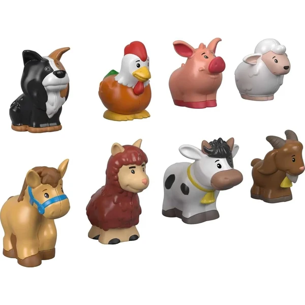

👶 3 años
Fisher-Price Little People Pack de 8 animales de granja
Un pack de ocho figuras de animales de granja (llama, gallina, vaca, cabra, caballo, cerdito, oveja y perro) con un tamaño pensado para que los niños las agarren con facilidad.
⭐
¿Por qué nos gusta?
- ✔Ocho animales de granja distintos en un pack.
- ✔Tamaño ideal para manos pequeñas.
- ✔Se puede ampliar con la granja de juguete a juego.
💬
Lo que más destacan las familias
Lo que más suele gustar es lo bien que entran en las manos pequeñas, así los niños las agarran y reconocen sin problema desde el principio. También se comenta que la variedad de animales da para inventar juegos distintos cada día.